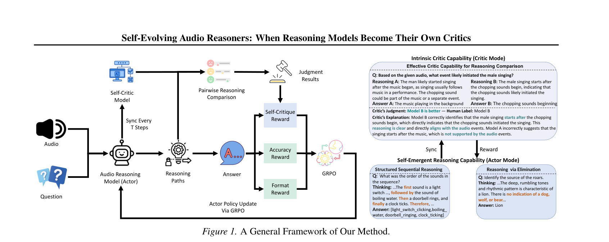

TL;DR — Audio LLMs can already critique reasoning quality without any training. SEAR exploits this: a single model plays both actor (generating reasoning) and critic (evaluating reasoning quality), creating a self-improving cycle. Periodic critic synchronization creates a virtuous loop — better actor → better critic → even better actor. No hand-crafted process rewards, no external judges.

Figure 1. SEAR framework. The Audio Reasoning Model acts as both actor (generating reasoning paths) and critic (evaluating reasoning quality via pairwise comparison). Periodic synchronization every T steps creates a self-improving cycle.
🧠 Key Innovations
🔄
Intrinsic Critic Capability
Audio LLMs inherently possess the ability to compare and evaluate reasoning quality — no training required. SEAR unlocks this latent capability.
🎭
Dual Actor-Critic Architecture
A single model serves as both actor (reasoning) and critic (self-evaluation). No separate reward model needed.
⏱️
Periodic Critic Sync
The critic is updated from the improving actor every T steps, creating a virtuous cycle of mutual improvement.
🌱
Emergent Reasoning Behaviors
Models spontaneously develop structured sequential reasoning, elimination-based logic, and reduced hallucination — all without explicit design.
📊 Results
SOTA
MMAU Test-Mini Audio Reasoning
> Gemini
Outperforms Gemini 2.5 Pro
0
Hand-Crafted Process Rewards
Self
Fully Autonomous Self-Critique
SEAR achieves state-of-the-art on MMAU Test-Mini, outperforming Audio Flamingo 3 and Gemini 2.5 Pro. The model develops structured reasoning behaviors entirely through self-critique — no manually designed rewards.
💡 Connection to CESAR
SEAR is the natural successor to CESAR (ICLR 2026). While CESAR showed that process rewards are essential for audio LLM reasoning, those rewards were still hand-designed. SEAR eliminates this last piece of human scaffolding — the model becomes its own critic.
The progression: Outcome rewards only (baseline) → Hand-crafted process rewards (CESAR) → Autonomous self-critique (SEAR)